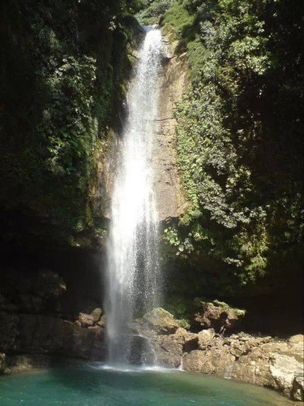
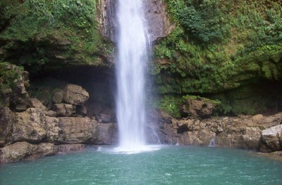
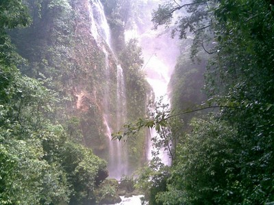
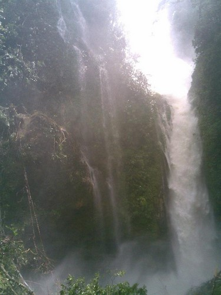
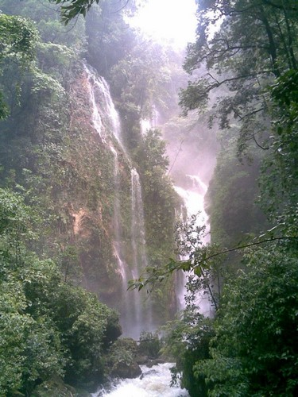

Si te gusta descubrir nuevos lugares, ven y conoce Cascada Joloniel.
Ideal para pasar un rato agradable con la familia.
La localidad de Joloniel está situado en el Municipio de Tumbalá
Puede llegar, tomando la carretera Yajalón-Tila, a 15 km encontrará un desvio del lado derecho, continua 5 km y encontrara el puente amarillo (Pueente Hidalgo), luego recorre 13 km aproximadamente y llegara a Tumbala. Después reccore 20 min aproximadamente hacia la Localidad de Joloniel.
En el lugar usted puede practicar actividades de esparcimientos como:
---Nadar---
---Caminatas/expediciones---
---Fotografía---
---Picnic---
---Contemplar el paisaje---





Posicione el mouse sobre las imágenes